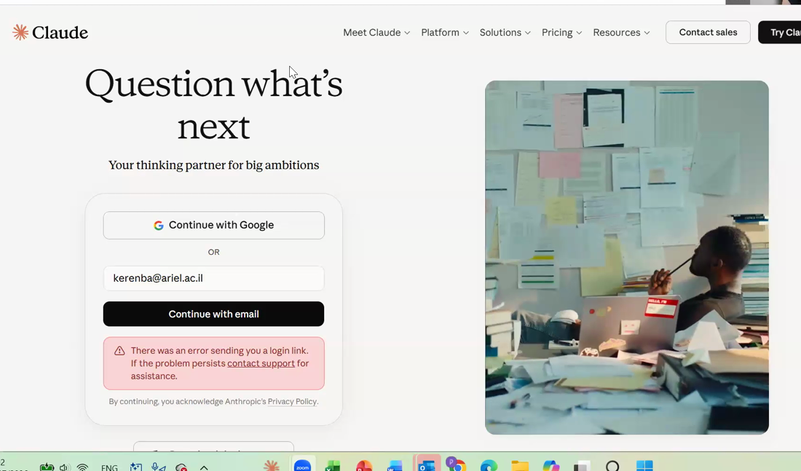
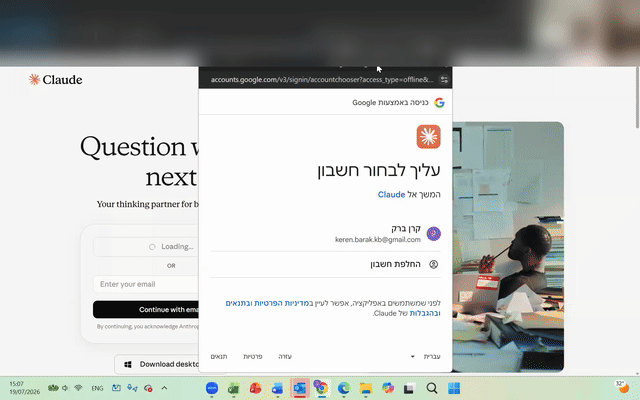
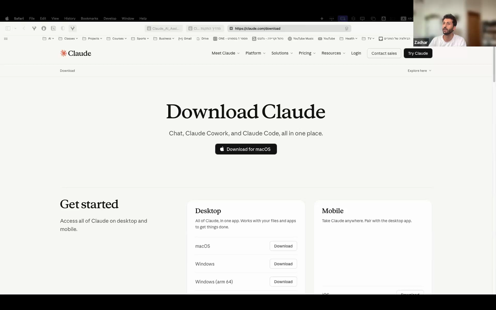
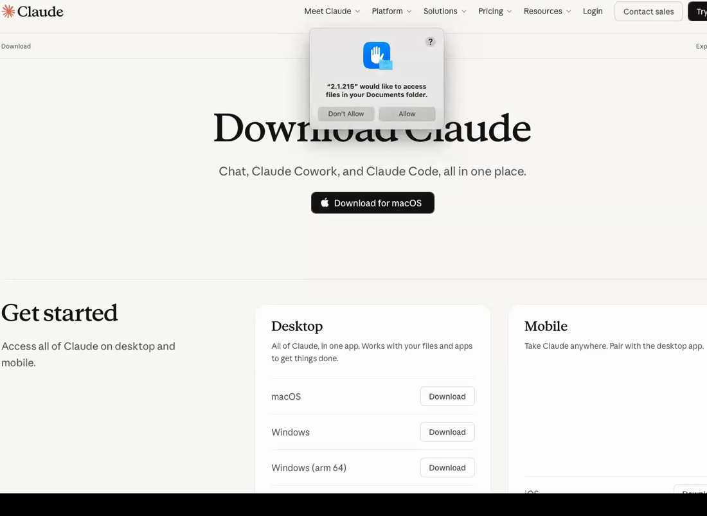
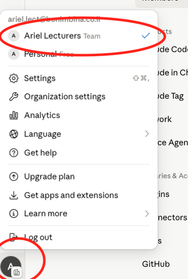
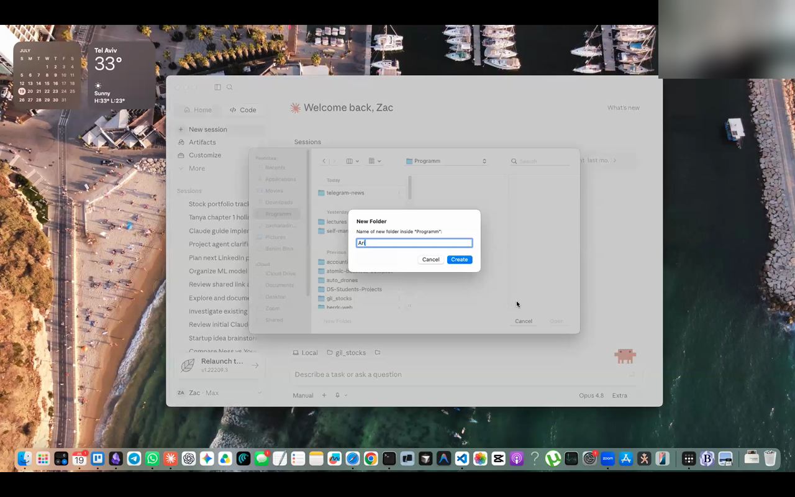
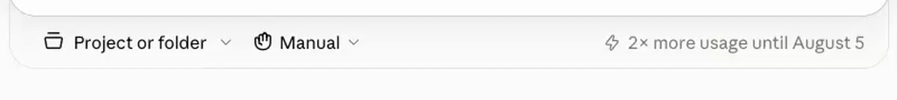
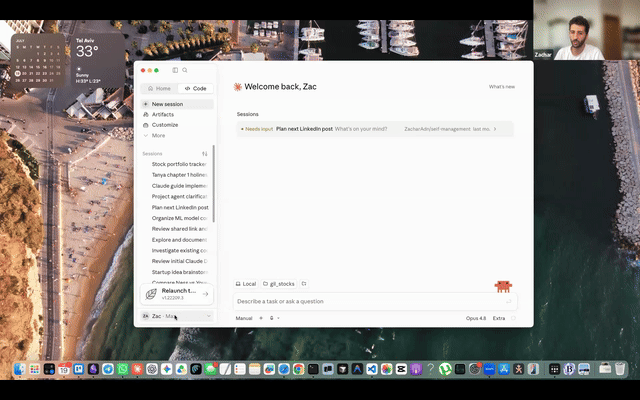
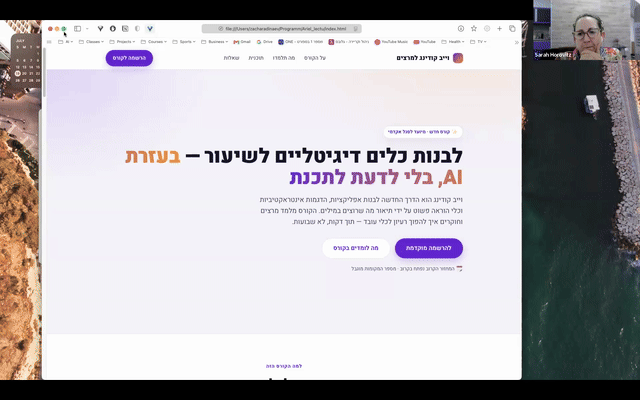

✅ לפני שמתחילים
- 💻 מתקינים על הלפטופ האישי שאיתו מגיעים לאינטל ב-27/7. לא על מחשב משרד או אוניברסיטה: מחשבים מנוהלים חסומים ע"י יחידת המחשוב, וההתקנה תיכשל שם ("אין אפשרות לפעול במחשב שלך").
- 📧 צריך שתהיה לכם הזמנה למנוי במייל, מהשולח Anthropic או מייל עם לינק הצטרפות ישירות מזכר - זה הנתיב שעבד הכי טוב במפגש. המיילים מתעכבים לפעמים בכמה דקות. לא רואים? חפשו בתיבה את המילים Anthropic או Claude ובדקו גם ב-Spam וב-Promotions.
1
הצטרפות למנוי דרך לינק ההזמנה
כ-3 דקות
- פתחו את מייל ההזמנה מאנטרופיק ולחצו על הלינק. קיבלתם כמה לינקים (במייל או בצ'אט)? השתמשו רק באחרון. לינקים ישנים פגים, ואם מופיע "invalid" או "expired" זה בדיוק הסימן: בקשו לינק חדש ולחצו עליו פעם אחת בלבד.
- חשוב למי שכבר השתמש בקלוד פעם: לפני הלחיצה על הלינק, היכנסו ל-claude.ai, לחצו על השם שלכם ובחרו Log out. סגירת החלון איננה התנתקות. בלי Log out מפורש ההזמנה תיתפס על החשבון הישן.
- במסך ההרשמה בחרו "Continue with Google" והתחברו עם חשבון ה-Google שאליו נשלחה ההזמנה. זו הדרך שעבדה חלק במפגש: היא עוקפת את קוד האימות במייל, שאצל רבים פשוט לא הגיע.

מסך ההתחברות. הכפתור העליון, Continue with Google, הוא הדרך. ההודעה האדומה למטה היא בדיוק השגיאה שמקבלים בנתיב קוד-המייל, ולכן עוקפים אותו

כך זה נראה בפועל, מתוך המפגש: התחברות עם Google עד הכניסה לאפליקציה
💡 טיפ מהמפגש
אם אחרי ה-Log out המערכת עדיין מתעקשת להיכנס לחשבון הישן, פתחו את הלינק בחלון גלישה בסתר (Incognito) ומשם הכל זורם.
⚠️ נרשמתם עם קוד למייל והקוד לא מגיע?
זה העיכוב המוכר של אנטרופיק. או שממתינים כמה דקות ובודקים שוב (כולל Spam/Promotions), או שפשוט חוזרים ומתחברים דרך Google.
2
הורדת האפליקציה למחשב
כ-3 דקות
- בסיום ההרשמה יופיע כפתור "Download for Windows" (אם זו מערכת ההפעלה שלכם). לחלופין, היכנסו ל-claude.ai/download והורידו את הגרסה למערכת שלכם.
- במחשב Windows יוצגו שתי אפשרויות: x64 ו-ARM64. כמעט תמיד הנכונה היא x64 (כל מחשב עם מעבד Intel או AMD). גרסת ARM64 מיועדת רק למחשבי Snapdragon. לא בטוחים? הגדרות ⬅ מערכת ⬅ אודות ⬅ "סוג המערכת".
- אשרו את תנאי השימוש, אבל אל תסמנו את האפשרות לשלוח לכם פרסומות.
- הריצו את קובץ ההתקנה. אם Windows מציג אזהרת אבטחה, לחצו "More info" ואז "Run anyway".
- בסיום, ודאו שהאפליקציה קיימת: לחצו על "התחל" והקלידו Claude.
- רוצים קיצור דרך קבוע? לחצו עכבר ימני על אייקון האפליקציה בשורת המשימות ובחרו "Pin to taskbar".

עמוד ההורדה, Download Claude. בוחרים את הגרסה של מערכת ההפעלה שלכם, וב-Windows בוחרים x64
3
התחברות באפליקציה ובדיקה שאתם על המנוי הנכון
כ-2 דקות
- פתחו את האפליקציה והתחברו, שוב דרך "Continue with Google", עם אותו חשבון שאיתו נרשמתם בשלב 1.
- מופיע דיאלוג ששואל באיזה חשבון להשתמש? בחרו "Ariel Lecturers", לא את החשבון האישי.
- בדיקת ודאות (חשוב!): לחצו על השם שלכם בפינה (בדרך כלל שמאל-למטה). אמורים לראות את "Ariel Lecturers", בחרו בו.
- בהתחברות הראשונה האפליקציה תבקש כמה אישורים (למשל פתיחת קישורים או גישה לתיקיית העבודה). אישורי הבסיס האלה בטוחים, אשרו. מצלמה, מיקרופון או גישה רחבה לקבצים? אין צורך לאשר כרגע, והכל הפיך בהגדרות.

דיאלוג כזה, בקשת גישה לקבצים לצורך העבודה, בטוח לאשר עם Allow

בדיקת הוודאות: לוחצים על העיגול עם ראשי התיבות בפינה (מסומן למטה), ובתפריט בוחרים Ariel Lecturers עם התג Team. אם אתם על Personal עם התג Free, אתם בחשבון הלא נכון
⚠️ כתוב "Free" או שמופיע מסך תשלום?
אתם על החשבון הפרטי ולא על המנוי של האוניברסיטה. אף אחד לא משלם כלום: פשוט החליפו ל-Ariel Lecturers דרך אותו בורר חשבונות. אם "Ariel Lecturers" לא מופיע בכלל ברשימה, כתבו לזכר: כנראה שהמייל שלכם עוד לא שויך למושב.
4
הפעלת Code והתקנת גיט
כ-5 דקות
החלק הזה הופך את קלוד מצ'אט לסוכן שבונה עבורכם אתרים וכלים על המחשב. בו נעבוד באינטל.
- באפליקציה לחצו על Code (בתפריט למעלה משמאל).
- לחצו על Open folder ופתחו תיקייה חדשה וריקה, במקום נוח. זו התיקייה שבה קלוד יעבוד: יכתוב קבצים, יקרא אותם ויריץ פקודות.

מתוך המפגש: לוחצים Open folder, ובחלון שנפתח יוצרים New Folder עם שם נוח, ובוחרים אותה
- קלוד יבקש להתקין גיט (Git, מערכת לניהול וגיבוי קוד). נכנסים לעמוד ההורדה: git-scm.com/downloads/win ומורידים את גרסת ה-64-bit ל-Windows (במק: לפי ההנחיה שקלוד נותן).
- מריצים את הקובץ שהתקבל. אשף ההתקנה שואל הרבה שאלות, וברירות המחדל מצוינות: פשוט לוחצים Next בכל המסכים, ובסוף Install.
- אחרי שהגיט הותקן, קלוד עלול להמשיך לבקש אותו. זה מוכר: לחצו על כפתור הבית (Home) ואז חזרו ל-Code, וההודעה תיעלם. אם לא, סגרו את האפליקציה לגמרי ופתחו מחדש.

התקנת גיט מההתחלה ועד הסוף: הורדה, Next על כל המסכים, Install
5
הבקשה הראשונה: לוודא שהכל עובד
כ-5 דקות
- ודאו שנבחרה תיקייה (הכפתור למטה, Open folder). קלוד יוצר הכל בתוך התיקייה הזו.
- כתבו לקלוד קוד בקשה פשוטה מהעולם שלכם, למשל: "תבנה לי אתר פשוט לקורס חדש שאני מכין, עם שם הקורס ושלושה נושאים".
- קלוד ישאל שאלות הבהרה ויבקש אישורים תוך כדי עבודה. לא חייבים להבין כל שאלה: אפשר לענות "תחליט אתה" או "תשאיר פשוט" והוא ימשיך. ככל שהבקשה מפורטת יותר, הוא ישאל פחות. את רמת האישורים שולטים דרך מצב העבודה (mode): מומלץ Auto, שמאשר לבד את כל מה שבטוח ושואל אתכם על כל השאר.
- נראה שהוא נתקע ולא קורה כלום? הוא כנראה חושב או עובד. תנו לו רגע.
- בסיום הוא יפתח לכם את התוצאה. הגעתם לכאן? אתם מוכנים ל-27/7.

בורר מצב העבודה, מתחת לתיבת הכתיבה: לוחצים על Manual ומחליפים ל-Auto. במצב Auto הוא מאשר לבד את מה שבטוח ושואל רק על השאר

מתוך המפגש: בחירת תיקייה, כתיבת הבקשה הראשונה, וקלוד יוצא לדרך

והתוצאה מהמפגש עצמו: אתר שלם שקלוד בנה מבקשה אחת, בלי שורת קוד אחת שלנו
⏳ מגבלות שימוש, חשוב לקראת ה-27
המנוי הוא Pro, והשימוש מוגבל בחלון מתגלגל של כ-5 שעות: בתוך החלון יש מכסה, וכשהיא נגמרת ממתינים לחידוש. כדי לא להיתקע באמצע הסדנה, אל תשרפו את המכסה ביום שלפני, והגיעו רעננים. לבדיקת השימוש: לוחצים על השם שלכם, אחר כך Settings, אחר כך Usage.
📞 נתקעתם? מוזמנים לפנות
- 💬 וואטסאפ: 050-3533080 (זכר עדינייב)
- 📧 מייל: zachar.adn@gmail.com